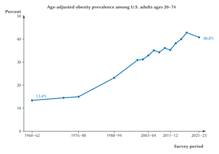
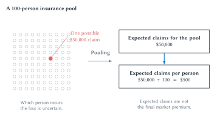
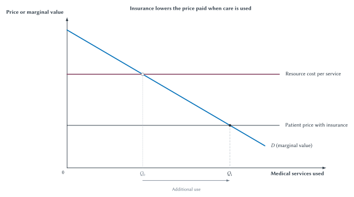

Chapter 19
Health, Medical Care, and Insurance
Health is produced by more than medical care, while insurance and payment rules reshape risk, prices, and incentives.

Suppose two communities spend the same amount on doctors, hospitals, and prescription drugs. Must they have the same health? No. One may have cleaner air, safer roads, better sanitation, lower smoking rates, more exercise, or different inherited risks. Chance matters too. A careful person can become seriously ill, while someone who takes large risks may remain healthy for years.
Now reverse the question. If two communities have similar health today, must they need the same medical care tomorrow? Again, no. One may have untreated conditions that have not yet produced visible harm. The other may be using effective care to manage those conditions.
The first lesson of health economics is therefore easy to state and easy to forget: health and medical care are not the same thing.
Health is an outcome. Medical care is one input that may prevent illness, diagnose it, treat it, or make life with it better. Health insurance is a way to share financial risk and pay for care. Medical spending measures resources used and prices paid. Access, use, spending, financial protection, and health can move in different directions.
Economist Michael Grossman helped organize this idea by treating health as something produced over time. Medical care can help produce it, but so can behavior, living conditions, public health, and biology.1 That is where this chapter begins. We will then ask why medical care is organized through insurance, why insurance changes behavior, how payment rules affect providers, and why every health-care system faces trade-offs.
Key Point
Health Is Not The Same As Medical Care
Health is an outcome. Medical care is one input into that outcome alongside biology, behavior, physical and social environments, public health, and chance. Better access to useful care can improve health, but coverage, use, spending, financial protection, and measured health need not move in the same proportion.
What Produces Health?
There is no honest pie chart that assigns one permanent percentage of health to doctors, behavior, genes, or income. The importance of each source differs across people, places, conditions, and time. The categories also interact.
Consider heart disease. Inherited risk may matter. Smoking, diet, sleep, and exercise may matter. Air pollution, workplace conditions, stress, and neighborhood safety may matter. Public-health information and food-safety rules may matter. Medical care may prevent, detect, and treat disease. Chance still matters after all of those influences are considered.
The same checklist applies across many health problems: biology and inherited risk; behavior; the physical and social environment; income, education, and other constraints; public health; medical care; and chance. These influences overlap. Income can affect living conditions and access to care. Environment can shape behavior. Medical care may matter greatly for one condition and much less for another. The list organizes questions; it does not assign fixed shares of responsibility.
This way of thinking prevents two common errors. The first is to assume that health insurance or medical spending determines health by itself. The second is to notice that behavior matters and leap to the conclusion that health is entirely a matter of willpower.
Behavior belongs in economic analysis because people respond to incentives and constraints. A safe place to walk, the price of cigarettes, the time required to prepare food, addiction, work schedules, and information can all change choices. Explaining a behavioral channel is not the same as blaming a person.
Common Mistake
Behavior Is Not A Complete Explanation
Behavior affects health, but behavior also responds to incentives, information, addiction, constraints, environment, and past circumstances. Identifying a behavioral channel does not establish blame or show that every behavior is easily changed.
Obesity, Risk, And Changing Medical Technology
The long-run rise in obesity in the United States illustrates why health cannot be reduced to access to doctors. Figure 19.1 reports measured obesity prevalence among adults ages 20 to 74. The estimate rose from 13.4 percent in 1960-1962 to 40.8 percent in August 2021-August 2023.2
Figure 19.1. Measured adult obesity rose greatly over the long run. The marked points are periodic survey estimates, not annual observations. Obesity is defined here as a body mass index of at least 30, and the estimates are age adjusted. BMI is useful for measuring populations but is not a complete measure of an individual’s body composition or metabolic health. The trend establishes a large change; it does not identify one cause. The last two estimates do not by themselves prove a lasting reversal.
The trend is a fact to explain, not an explanation by itself. Food, work, transportation, recreation, sleep, biology, income, stress, and medical care all changed over these decades. Obesity also is not the same as metabolic syndrome, a cluster of risk factors associated with diabetes, heart disease, stroke, and other health problems.3
The health and budget stakes are large. Chronic disease can require more physician time, medicines, and hospital capacity. It can raise private insurance premiums and public spending. CBO projects federal outlays for major health programs to grow from about 6.0 percent of GDP in 2026 to 6.7 percent in 2036.4 Unless taxes or borrowing rise, faster growth leaves less room for other government priorities.
Two programs account for most federal health spending.
Medicare is federal health insurance mainly for
people age 65 and older, along with some younger people with
qualifying disabilities or conditions. Medicaid
is a joint federal-state program covering eligible people with
low incomes and some people with disabilities. CBO estimates
that federal outlays in 2026 will be about
$1.1 trillion for Medicare and
$708 billion for Medicaid. The Medicaid figure
counts only the federal share, not additional state spending.5
A straight-line forecast could therefore look grim: more chronic disease, more treatment, and ever greater pressure on families and government. But that forecast would assume that medical technology stands still. A long-run health-spending forecast is also a forecast about future medical technology, whether it says so or not.
It does not. The pace is visible even in ordinary news coverage: new compounds, new uses for older medicines, and new trial results seem to appear constantly. GLP-1-based medicines are a striking example. These drugs act on hormone signals involved in blood sugar and appetite. In major trials of selected adults without diabetes, semaglutide produced average weight loss of 14.9 percent over 68 weeks, while the two highest tested doses of tirzepatide produced average losses of 19.5 and 20.9 percent over 72 weeks.6 A later trial found that semaglutide also reduced major cardiovascular events in a selected high-risk group.7
These results do not guarantee the same benefit for every patient. Price, side effects, continued use, and long-run health effects still matter. But they demonstrate the larger point: forecasts of future illness and spending must allow for treatments that do not yet exist.
If an innovation prevents expensive disease at a reasonable cost, its value may reach far beyond the patient. Private insurers, Medicare, Medicaid, employers, families, and taxpayers may all benefit. Such innovation could ease future budget pressure and leave more resources for other purposes. But the result is not automatic. An expensive treatment with small or short-lived benefits could increase spending instead.
Case Study
A Forecast Is Not Fate
A growing health problem can place enormous pressure on medical resources and public budgets. Economic forecasts must still leave room for innovation. The treatments available ten or twenty years from now need not be the treatments available today.
Why Reward Medical Innovation?
The value created by a successful medicine is not the same as
the profit earned by its producer. Patients may live longer or
feel better. Families, employers, insurers, and taxpayers may
also gain. Economists Kevin Murphy and Robert Topel once
estimated that a 1 percent reduction in cancer mortality would
be worth about $500 billion to the U.S. population
in their model.8 The estimate is not about
one drug. It illustrates how large the social value of better
health can be.
Key Point
Social Value Is Not The Same As Private Profit
A successful treatment can create value for patients, families, insurers, employers, and taxpayers that never appears as profit for the innovator. The social return to medical research can therefore exceed the private return, even when a patented drug is expensive.
Developing a medicine can require years of research, failures, clinical trials, and regulatory review. Once the formula is known, manufacturing may be far cheaper than discovering and proving the treatment. A patent offers a temporary period without direct imitation so that a successful innovator may recover those earlier costs.
The trade-off is familiar from Chapter 15. Patent protection encourages research, but the resulting market power can raise prices and restrict access. It also misses some valuable ideas. Recent working-paper evidence on new uses for existing drugs suggests that research falls sharply when firms cannot protect the knowledge created by proving that a new use works.9
Public research funding, grants, prizes, and other rewards can fill some gaps. None is perfect. Society needs some way to pay for the search for tomorrow’s treatments, and the design of that reward affects what researchers choose to pursue.
Common Mistake
Patents Are An Institutional Trade-Off
Patents can support research by giving innovators a temporary opportunity to recover large and risky development costs. They also create temporary market power and work poorly when valuable knowledge cannot be protected or when benefits reach people unable to pay. The relevant comparison is among imperfect ways of financing and rewarding innovation.
Why Medical Care Is Different
Buying a routine physical exam is not like buying a sandwich. A patient may not know whether care is needed, which treatment is best, whether waiting is dangerous, or what the final bill will be. The provider has specialized knowledge, but the patient must trust that knowledge. Illness can make delay costly and comparison shopping difficult. Insurance separates the price of care from the price paid when care is used.
Kenneth Arrow made uncertainty the center of his classic 1963 analysis of medical care.10 Illness is uncertain. The success of treatment is uncertain. Knowledge is unevenly divided between patients and professionals. Institutions such as insurance, licensing, professional ethics, and long-term trust can be understood partly as responses to those problems.
Kenneth Arrow: Why Does Medical Care Have Unusual Institutions?
Kenneth Arrow was one of the most influential economists of the twentieth century. His work ranged from general equilibrium and social choice to information and uncertainty. In medical care, he asked a deceptively simple question: why does this market rely so heavily on insurance, professional rules, trust, and nonprofit organizations? His answer began with uncertainty and unequal information. The lesson was not that ordinary economic reasoning should be abandoned. It was that the institutions surrounding exchange are part of the economic problem.
Arrow’s point is even more useful today than a simple argument over whether health care should be called a market. Medical care already operates through a mixture of prices, professional rules, insurance contracts, employers, public programs, regulation, and organizational trust. The question is how those institutions affect choices and outcomes.
Insurance Pools Risk
Imagine 100 people. During the coming year, one person is
expected to have a medical loss of $50,000, but no
one knows in advance who it will be.
The expected claims for the group are $50,000.
Dividing by 100 gives expected claims of $500 per
person:
\[ \$50{,}000 \div 100 = \$500 \]

Figure 19.2. Insurance makes an uncertain individual
loss more predictable for a group. One person may incur
the $50,000 claim, but the identity of that person
and whether the loss occurs are uncertain. Pooling produces
expected claims of $500 per person. It does not
make the treatment or other medical resources free, and
$500 is not necessarily the final market
premium.
Why might someone willingly pay a premium above
$500? The reason is risk aversion.
A certain cost of somewhat more than $500 may be
easier to bear than a small chance of losing
$50,000. Insurance is valuable because it replaces
a large uncertain loss with a smaller predictable payment.
The premium must also cover more than expected medical
claims. Insurers process claims, prevent fraud, maintain
reserves, hire workers, use capital, and bear the risk that
actual claims exceed expectations. A private insurer also needs
a return on capital. A premium above $500 is
therefore not by itself proof of exploitation.
Quick Concept
Insurance Pooling
Insurance pools uncertain losses across many people so that a potentially catastrophic individual cost becomes a more predictable group cost. Pooling redistributes risk; it does not eliminate the resources used for care.
This arithmetic explains the value of insurance, but not how a successful pool is formed. People know different things about their likely risks, and coverage changes the price paid when care is used. Those two facts bring us back to Chapter 12.
Adverse Selection: Who Joins The Pool?
Quick Concept
Recall The Timing
Chapter 12 introduced adverse selection and moral hazard as different information problems. In health insurance, selection concerns information and participation before or when coverage is chosen. Moral hazard concerns changed incentives after coverage changes the price or protection facing a decision-maker.
Suppose an insurer offers the same premium to people who privately know that their expected medical costs differ. People who expect high costs will find the policy more attractive. People who expect low costs may decide that the premium is not worth paying.
If enough lower-risk people leave, average claims among those who remain rise. The insurer raises the premium to cover those expected claims. The higher premium gives more lower-risk people a reason to leave. The cycle can continue.
This process creates pressure, not a law that every insurance market must collapse. Employer group coverage can bring people with different risks into one pool. Subsidies can keep lower-risk people enrolled. Risk adjustment can transfer funds toward plans with higher-cost members. Participation requirements or waiting periods can change the gain from waiting until sickness appears. Underwriting can price some observable risks, although it may weaken protection for the people who need insurance most and may be restricted by law.
Every response has a trade-off. A rule that stabilizes a pool may limit choice, require taxes, create administrative costs, or expose people to different risks. The economic task is to compare those costs with the selection problem the rule addresses.
Moral Hazard: Coverage Changes The Price Of Care
After someone has insurance, the price paid at the point of
care may be much lower than the resource cost of the service. A
visit that uses $200 of labor, equipment, and
supplies might require only a $20 copayment from
the patient. The other $180 does not disappear. It
is paid through the insurance pool, taxes, or some other
source.
When the price facing the patient falls, use tends to rise. That is the law of demand applied to medical care.
Common Mistake
Moral Hazard Does Not Mean Immoral Behavior
Moral hazard means that protection changes the incentives facing a decision-maker. When insurance lowers the price paid at the point of care, patients or providers may change behavior even when everyone is acting honestly.

Figure 19.3. Insurance can increase medical care by lowering the price paid when care is used. At the full resource cost, the quantity is \(Q_0\). At the lower patient price with insurance, use rises to \(Q_1\). The additional care is not automatically waste. Some may be valuable care that would otherwise be unaffordable; some may have marginal value below its resource cost.
The welfare question is not whether use rises. It is whether the benefit of the added care exceeds the value of the resources used to provide it.
Suppose insurance makes a lifesaving medicine affordable. The added use may create gains far above its cost. Now suppose the lower price leads to a test that provides almost no useful information. That added use may cost more than it is worth. The graph alone cannot tell us which service is which.
Common Mistake
More Care Is Not Automatically Better Or Wasteful
The relevant question is whether the additional benefit of care exceeds its opportunity cost. Utilization by itself does not answer that question.
Cost Sharing
Insurance plans often ask patients to pay part of the bill:
- A deductible is the amount a patient pays before ordinary insurance payments begin.
- A copayment is a fixed amount paid for a
service, such as
$25for a visit. - Coinsurance is a percentage of the covered bill paid by the patient.
- An out-of-pocket maximum limits covered payments by the patient during a period.
These rules raise the marginal price facing the patient and can reduce use. But they also make insurance less complete. A high deductible may discourage a low-value visit, but it can also discourage a useful medicine or an early diagnosis.
The RAND Health Insurance Experiment provides unusually strong evidence. Beginning in the 1970s and ending in the early 1980s, families were randomly assigned to plans with different levels of cost sharing. Higher cost sharing reduced medical use and spending. It reduced both more-effective and less-effective care. Average health effects were often limited across the broad study population, but some poorer and sicker participants experienced worse outcomes on some measures.11
RAND does not give one timeless number for every modern plan, treatment, or patient. Medical technology and insurance have changed. Its durable lesson is narrower and more important: cost sharing changes behavior, but it is a blunt instrument. Patients do not always know which care has high value.
Key Point
Insurance Creates A Real Trade-Off
The feature that makes insurance valuable–shielding patients from large bills–is also what weakens the price signal when care is used. More cost sharing can reduce low-value care, but it can also reduce valuable care and expose patients to greater risk.
Patients, Providers, And Payers
Medical decisions are rarely made by one fully informed buyer facing one visible price. The patient experiences symptoms and bears health consequences. The provider supplies advice and care. An insurer or public program may pay most of the bill. An employer may help choose the plan and contribute toward the premium.
Quick Concept
Third-Party Payment
In third-party payment, the patient receives care, the provider supplies and bills for it, and an insurer or public program pays much of the cost. Choice, provision, and payment are therefore separated.
Changing who writes the check does not make care free. The cost still appears through premiums, taxes, borrowing, or resources taken from other uses.
That separation creates information problems. The patient may not know the negotiated price, expected out-of-pocket bill, or likely quality. The insurer cannot directly observe every detail of medical need. The provider knows more about medicine than the patient but may not know the patient’s preferences, resources, or complete history.
The patient-provider relationship is therefore a principal-agent problem. Patients rely on clinicians partly because patients cannot diagnose and treat themselves. Professional ethics, reputation, licensing, second opinions, malpractice rules, and insurer review are attempts to support trust and limit mistakes or misuse. None is free or perfect.
Payment rules matter too. That does not mean doctors ignore patients or professional duties. It means that, as elsewhere in economics, rewards affect choices at the margin.12
One Patient, Different Payment Rules
Consider a primary-care practice managing a patient with diabetes.
There is no neutral way to pay a provider. Paying for each service rewards more services; paying a fixed amount per patient rewards economizing, sometimes too much.
Under fee-for-service, the practice receives payment for visits, tests, and procedures. That can support access and careful follow-up. It can also reward more billable services even when a phone call, coordination with a pharmacist, or prevention would create more value.
Under capitation, the practice receives a fixed payment for managing the patient during a period. Preventing complications and coordinating care can now save resources for the practice. But a fixed payment also creates a risk of too little care or reluctance to enroll patients expected to need expensive treatment.
Other arrangements shift incentives again. A salary weakens the link between each service and payment, while a bundled payment covers a defined episode such as surgery and follow-up.
Key Point
Payment Rules Shape Provider Incentives
Paying for each service can encourage more services. Paying a fixed amount per patient can encourage economizing, sometimes too much. No payment rule measures need or quality perfectly.
The right question is not which rule is perfect. None is. Ask what the rule rewards, what valuable activity may receive too little reward, what can be measured, and who bears the financial risk.
Competition And Market Power In Medical Care
Not all medical services are bought under the same conditions.
A person with chest pain cannot spend three days comparing hospitals. Delay may be dangerous, and the patient may be unable to judge what treatment is needed. Emergency care is a poor setting for ordinary search and posted-price competition.
A scheduled imaging test or routine prescription is more shoppable. Patients may have time to compare locations, prices, and quality. Even then, comparison can fail if negotiated prices are hidden, insurance networks differ, or quality is hard to measure.
Local scarcity matters. A region with one hospital, one specialist group, or few insurers may have substantial market power. Consolidation may coordinate services or spread fixed costs, but it may also strengthen bargaining power and raise negotiated prices. A large building is not proof of monopoly, and a merger is not proof of efficiency. The mechanism and evidence matter.
Provider networks can give insurers bargaining leverage and direct patients toward lower-cost providers. They can also restrict choice. Licensing can protect patients from unqualified providers while limiting entry. Price transparency can help in services that are actually comparable and shoppable. But a posted price that few patients or insurers actually pay is not much of a price signal.
This is why the ordinary competitive benchmark remains useful but incomplete. It tells us to look for prices, entry barriers, substitutes, information, and incentives. It does not tell us to pretend those conditions are the same in an emergency room and a scheduled clinic.
Every System Rations Scarce Care
Medical resources are scarce. There are only so many nurses, physicians, hospital beds, operating rooms, medicines, and tax dollars. No health-care system can provide every possible service immediately to every person at a price of zero.
Systems differ in how they decide who receives what. Some rely more on prices and private insurance. Some rely more on public insurance, budgets, waiting, or administrative coverage rules. Most use a mixture.
With little insurance, ability and willingness to pay do much of the rationing, and patients bear more financial risk. Private group insurance spreads risk but limits access through premiums, cost sharing, provider networks, and coverage rules. Public insurance spreads risk more broadly through taxes, but eligibility, covered services, payment rules, and public budgets still limit care. A tightly budgeted public system may charge patients little when care is used, but waiting, capacity, and clinical priorities become more important.
These examples show why arguments about whether care should be “rationed” miss the point. Scarcity guarantees rationing. Money prices ration. Waiting rations. Insurance networks ration. Budgets and coverage rules ration. A physician’s decision about which patient needs care first rations time.
Key Point
Every System Rations Scarce Care
Health-care systems allocate scarce clinicians, facilities, treatments, and funds through some combination of prices, insurance rules, networks, waiting, budgets, coverage decisions, and clinical priorities. The policy question is not whether to ration, but how.
No arrangement wins on every dimension. Broad coverage can improve financial protection while increasing taxes, spending, waiting, or administrative controls. Strong cost sharing can limit spending while exposing sick people to more risk. High provider payments can support capacity and innovation while raising premiums or taxes. Tight budgets can control spending while limiting access or weakening incentives to expand supply.
The comparison must be institutional, not imaginary. An ideal market with fully informed patients is not the alternative to an imperfect public program. An all-knowing public program is not the alternative to an imperfect market. The real choice is among arrangements run by people who face limited information, incentives, and scarcity.
Key Point
Compare Institutions, Not Ideals
Health-care policy should compare realistic arrangements across risk protection, access, cost, quality, innovation, equity, and administrative burden. Identifying a market failure does not establish that every intervention improves the outcome, and identifying government failure does not make an unregulated market workable.
Bringing The Chapter Together
Health economics is not one exception after another to ordinary economics. It is ordinary economics applied carefully to a setting with unusual uncertainty, information, and institutions.
Begin with the outcome. Health is produced by biology, behavior, environment, public health, medical care, and chance. Medical technology can change what is possible, but innovation must be financed and rewarded somehow.
Then identify the risk. Insurance pools uncertain losses and protects people from financial catastrophe. That protection is valuable, but it changes participation and the marginal price of care. Adverse selection concerns who joins before coverage. Moral hazard concerns how choices change after coverage.
Next identify the decision-maker. Patients, providers, employers, insurers, and public officials do not have the same information or face the same prices. Provider payment rules reward different margins. Emergency and scheduled care provide different opportunities for competition.
Finally, compare realistic institutions. Each solves some problems and creates others. The central question is not whether health care should involve markets or government. It already involves both. The question is which mix of rules, prices, insurance, professional trust, competition, and public action handles the trade-offs best.
Chapter Summary
- Health is an outcome. Medical care is one input into health alongside biology, behavior, environment, public health, and chance.
- Access, medical use, medical spending, financial protection, and health outcomes are different measures and need not move together.
- The long-run obesity trend shows a large change in measured health risk but does not identify its causes.
- New medicines can change the technology of health production. Their value depends on outcomes, harms, continued use, price, access, and alternatives.
- The social value of medical innovation can exceed the profit captured by the innovator.
- Patents can support research by creating a temporary reward, but they also create market power and do not reward every valuable project well.
- Medical care differs from an ordinary spot market because illness, treatment success, need, price, and quality are uncertain, while medical knowledge is unevenly distributed.
- Insurance pools uncertain losses. It makes individual financial exposure more predictable but does not eliminate the resources used for care.
- Adverse selection occurs before or when coverage is chosen. People with higher expected costs may be more likely to join at a common premium.
- Moral hazard occurs after protection changes incentives. A lower point-of-care price can increase medical use without implying fraud or bad character.
- Cost sharing can reduce use and spending, but it may reduce valuable as well as low-value care.
- Third-party payment separates the patient receiving care, the provider supplying it, and the insurer or public program paying much of the bill. Changing who writes the check does not eliminate the cost of care.
- Fee-for-service rewards more billable services, while capitation rewards economizing, sometimes too much. No payment rule produces perfect incentives.
- Competition works differently in emergencies and in scheduled, comparable services. Networks, licensing, consolidation, local scarcity, and whether posted prices are actually paid can affect competition.
- Vaccination, antibiotic use, sanitation, and disease surveillance connect health care to externalities and public goods.
- Every health-care system rations scarce resources. Systems differ in whether they rely more on prices, cost sharing, networks, waiting, budgets, or coverage rules.
Key Terms
- Health outcome: A measure of a person’s or population’s health, not a measure of medical care alone.
- Medical care: Services intended to prevent, diagnose, treat, manage, or rehabilitate illness or injury.
- Determinants of health: Biological, behavioral, environmental, social, public-health, medical, and chance influences on health.
- Medical innovation: A new treatment, device, process, or use of knowledge that changes what medical care can do.
- Medicare: Federal health insurance mainly for people age 65 and older and some younger people with qualifying disabilities or conditions.
- Medicaid: A joint federal-state health program for eligible people with low incomes and some people with disabilities.
- Metabolic syndrome: A cluster of risk factors associated with greater risk of diabetes, heart disease, stroke, and other health problems.
- GLP-1-based medicine: A treatment that acts on hormone signals involved in blood sugar and appetite.
- Social value: The total value an innovation creates for patients and others, whether or not the innovator receives it as revenue.
- Private return: The reward captured by the person or organization making an investment.
- Patent: A temporary legal right to exclude others from using an invention covered by the patent.
- Risk pool: A group whose uncertain losses are combined for insurance.
- Expected loss: The probability-weighted average loss before the outcome is known.
- Premium: The price paid for insurance coverage.
- Claim: A request for payment under an insurance contract.
- Risk aversion: A preference for avoiding large uncertain losses, even at some cost.
- Adverse selection: A participation problem caused by hidden information before or when a contract is chosen.
- Moral hazard: A change in behavior after protection changes the price or risk facing a decision-maker.
- Deductible: The amount paid by the patient before ordinary insurance payments begin.
- Copayment: A fixed patient payment for a covered service.
- Coinsurance: The share of a covered bill paid by the patient.
- Out-of-pocket maximum: A limit on covered patient payments during a period.
- Third-party payment: An arrangement in which a patient receives care, a provider supplies it, and another party pays much of the bill.
- Utilization: The use of medical services.
- Fee-for-service: Payment tied to each billable service.
- Capitation: A fixed payment per enrolled patient for a period.
- Provider network: A group of providers covered under specified terms by an insurer or program.
- Provider market power: The ability of a provider to affect prices or contract terms because patients or insurers have limited alternatives.
Figure Reading Guide
- Figure 19.1: distinguish a long-run prevalence trend from a claim about its cause.
- Figure 19.2: calculate expected claims and explain what pooling does not eliminate.
- Figure 19.3: separate the patient price from resource cost and avoid calling all additional use waste.
Review Questions
- Why are health and medical care not the same thing?
- Name six broad sources that can affect health.
- Why should behavior be analyzed without treating it as a complete explanation or a statement of blame?
- What does the U.S. obesity trend establish? What does it not establish?
- Why is metabolic syndrome not simply another name for obesity?
- How can chronic illness affect the medical system even when the direct health effect begins with one person?
- How do new medicines change the technology of producing health?
- Why can the social value of a medicine exceed the profit earned by its producer?
- Distinguish Medicare from Medicaid.
- State the main benefit and main cost of using patents to encourage medical research.
- Why might research into a new use of an existing drug receive too little private funding?
- According to Arrow’s framework, why does medical care rely heavily on trust and institutions?
- What does insurance pooling accomplish? What does it not accomplish?
- In the 100-person example, why might a premium above expected claims still be worthwhile?
- Distinguish adverse selection from moral hazard by timing.
- How can adverse selection raise the premium in a voluntary insurance pool?
- Why does adverse selection not guarantee complete market collapse?
- Why does the term moral hazard not imply immoral behavior?
- What is the difference between the patient’s point-of-care price and the resource cost of care?
- Why is additional care caused by insurance not automatically wasteful?
- Define deductible, copayment, coinsurance, and out-of-pocket maximum.
- What did the RAND Health Insurance Experiment show about cost sharing?
- What is third-party payment?
- Why is the patient-provider relationship a principal-agent problem?
- Compare the main incentives created by fee-for-service and capitation.
- Why does no provider-payment rule create perfect incentives?
- Why is ordinary price competition more difficult in emergency care than in a scheduled service?
- How can provider networks both help and harm competition?
- Give one positive and one negative health-related externality.
- Why does every health-care system ration care?
- What does it mean to compare institutions rather than ideals?
Economic Reasoning Questions
- In a pool of 200 people, two people are each expected to
incur a
$40,000claim. What are total expected claims? What are expected claims per person? Why might the final premium be higher? - A plan’s premium is based on an average of low-risk and high-risk members. Explain what happens if many low-risk members leave. Identify the information problem and its timing.
- A prescription costs
$120in resources. Insurance lowers the patient’s price from$120to$10. Use marginal reasoning to explain when the added use creates gains and when it creates losses. - A plan raises its deductible. Trace the likely effects on financial protection, medical use, and spending. Why can health move differently from spending?
- A clinic is paid for every visit. Identify one useful activity the rule rewards and one activity it may reward too strongly.
- The same clinic instead receives one annual payment for every enrolled patient. Identify one useful activity this may reward and one new risk it creates.
- A hospital posts a list price for a scheduled scan. Explain why that number may not equal the insurer’s price or the patient’s final payment.
- Compare a person choosing an emergency department during chest pain with a person scheduling a routine scan. Which conditions for ordinary competition differ?
- A new vaccine protects the vaccinated person and reduces transmission to others. Explain why the market quantity may be too low.
- A government expands insurance coverage. List four outcomes that should be measured separately rather than summarized as whether the policy “worked.”
- A patented treatment costs little to manufacture but required costly research. Explain why marginal-cost pricing and innovation incentives point in different directions.
- A drug company cannot prevent competitors from using evidence that an old drug treats a new condition. Explain why a socially valuable study may not be financed.
- A proposal promises unlimited medical care with no taxes, premiums, waiting, or restrictions. Use scarcity and opportunity cost to evaluate the promise.
Optional Research And Discussion Questions
- Does paying donors reduce blood or plasma shortages? Distinguish whole blood used for transfusion from source plasma used to manufacture medicines. Compare at least one field experiment with cross-country evidence. Consider donor response, safety screening, collection capacity, regulation, and the possibility that rewards shift donations across time or place.13
- Choose one scheduled medical service. Find, if available, a posted charge, a negotiated insurer price, and an estimated patient out-of-pocket price. Explain why the three numbers differ and what each does not tell you about quality.
- Select one medical innovation. Separate its effect on health, medical use, spending, financial protection, producer profit, and social value. Do not assume those outcomes move together.
- Compare two realistic ways to reduce low-value medical care. For each, identify the information required, the decision-maker whose incentive changes, and the risk of reducing high-value care.
- Compare two health-care arrangements described in this chapter. Which handles catastrophic financial risk better? Which relies more on prices, waiting, networks, or budgets? What evidence would you need before recommending one change?